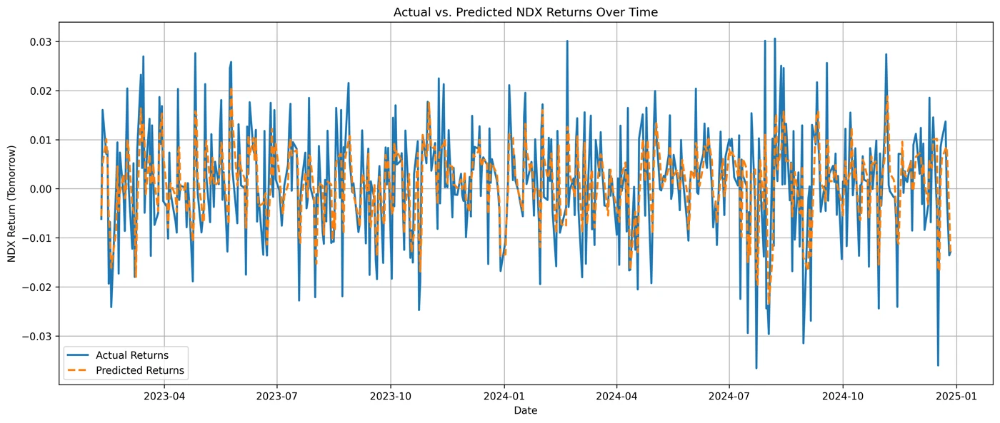
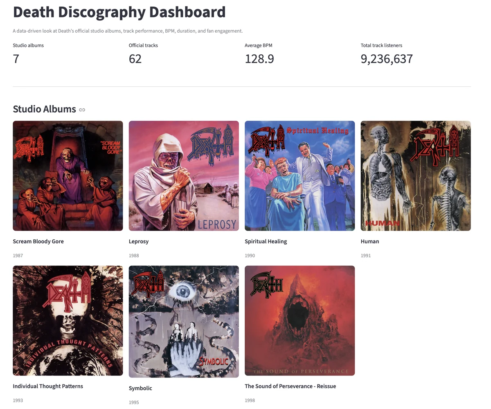

NASDAQ-100 forecasting
Combining stock prices and macroeconomic indicators to explore next-day market direction and returns.
View case studyMAURICIO RUIZ / DUBLIN, IRELAND
Data analytics, business analysis & project delivery.
Combining analytical thinking, stakeholder collaboration and a journalist’s instinct for the right questions.
Experience at TikTok and Accenture
From evidence to action
THE PORTFOLIO
A closer look at the problems, process and outcomes.

Combining stock prices and macroeconomic indicators to explore next-day market direction and returns.
View case study
Turning fragmented music and audience data into an interactive view of four influential bands.
View case studyA conversational portfolio assistant grounded in documents about my experience, skills and projects.
View case study
Comparing five classifiers on Kepler observations, with attention to imbalance and model confidence.
View case study
A complete studio-discography explorer built from multiple music APIs and carefully cleaned metadata.
View case studyBEYOND THE NOTEBOOK
I work across business and operational teams to understand the problem, build useful analytical solutions and help people act on the findings.
of weekly manual reporting effort saved through Python automation at TikTok.
reduction in appeals processing time through a Power Apps workflow at Accenture.
Honours in the Higher Diploma in Data Analytics, National College of Ireland.
TikTok · Dublin
Translate stakeholder requirements into reporting and automation solutions. Build KPI dashboards, investigate operational risks and coordinate improvements across EMEA teams.
Accenture · Dublin
Combined quality audits and root cause analysis with Power BI reporting and a Power Apps workflow to improve visibility and operational efficiency.
Requirements gathering, stakeholder alignment, root cause analysis and clear success measures.
SQL, Python, Power BI, statistics and machine learning applied to practical questions.
Connecting business needs with technical work, managing dependencies and communicating progress.
The messy APIs, cleaning decisions and musical discoveries behind the dashboard.
Read the story ↗MACHINE LEARNING / 02 MAY 2026A closer look at Kepler observations, machine learning and interpreting model performance.
Read the story ↗LET’S CONNECT
Interested in my work or hiring for a data, business analysis
or project delivery role? I’d be happy to connect.